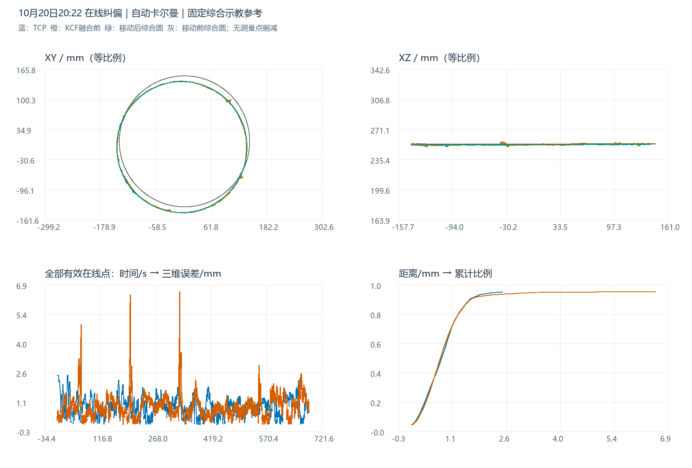

在线纠偏结果分析：自动卡尔曼
移动后综合示教参考下的轨迹误差与融合效果
参考保持不变：此前四组历史示教等权综合的原始示教圆，半径固定 142.035339635 mm。本组只用融合前原始KCF估计圆心和法线，再刚体移动综合示教。TCP和融合后视觉均未用于调整参考，未按本组误差重选半径；移动后是事后估计参考，不是独立实测焊缝真值。
1. 输入记录与实际融合模式
只读取用户指定20:22会话。机器人状态8,219条、视觉诊断7,719条；TCP筛选online_running、CORFLAG=1、DETFLAG=1、S_START=1、S_HOLD=0、ALARM=0，保留7,717点。视觉筛选online_running、result_valid=1，原始和融合后各7,418点。无测量点平滑、拟合替换或峰值剔除。
7,272个有效在线视觉点记录fusion_applied=1，另外146点未融合。KCF增益有值7,272点，X/Y中位数均约98.81%，范围75.00%～99.82%；这是动态增益，不能套用固定0.1/0.9。模板重新初始化与Kalman seeded标记各146次，计数不单独证明重初始化原因。
| 记录字段 | 有值点数 | 最小 | 中位数 | 最大 |
|---|---|---|---|---|
| kcf_weight_x | 7272 | 0.7500 | 0.9881 | 0.9982 |
| kcf_weight_y | 7272 | 0.7500 | 0.9881 | 0.9982 |
| prior_weight_x | 7272 | 0.0018 | 0.0119 | 0.2500 |
| prior_weight_y | 7272 | 0.0018 | 0.0119 | 0.2500 |
| normalized_peak | 7272 | 0.0000 | 0.6381 | 0.9505 |
| observation_noise | 7272 | 0.0001 | 0.0004 | 0.0100 |
目录标注“启动在线ICP但不成功”作为用户给定的局部表面点云定位背景保留。本会话另有420批轨迹预测ICP记录、362批applied；项目当前文档与代码将其与修改工件位姿的局部表面ICP分开，因此不能将前者当作后者成功的证据。本次不重新判定局部表面ICP失败原因，也不凭轨迹批次推断发生了工件SET_POSE写回。
2. 四轨迹三维图与各轴波动
统一到变位机末节随动坐标系（材料系），逐点消除S1/S2外轴旋转；视觉恢复到与示教相同的末节原点，较工具TCP系Z加回231 mm。若切到工具TCP系，所有圆心Z减231 mm即可，半径和距离不变。
蓝：TCP；橙：原始KCF；灰色虚线：移动前综合示教；绿：移动后综合示教参考。紫色卡尔曼融合后视觉可从图例打开。支持三维/XY/XZ/YZ视角、两组示教独立切换和Z显示倍率，默认1×等比例；显示倍率不改变数据。生成W点是综合参考采样，不是本次独立测量点。
XYZ方向偏差
ΔX、ΔY、ΔZ为每个测量点减去参考圆最近点，用于查看局部波动；不是TCP与KCF同步配对差值，也不评价沿缝时序滞后。可在图例打开融合后曲线，检查原始KCF与卡尔曼结果的区别。

3. 综合示教来源与同坐标系圆参数
| 历史示教 | W点数 | 拟合半径/mm | 综合权重 |
|---|---|---|---|
| 20230608CHUFENGKOU | 1687 | 140.6477 | 25% |
| 20250606CHUFENGKOU | 1663 | 141.6920 | 25% |
| 20260308CHUFENGKOU | 1355 | 142.0846 | 25% |
| 20260404CHUFENGKOU1 | 1368 | 143.7170 | 25% |
沿用四种历史W几何的既有综合结果：按XYZ去重，各组周向分箱后分别拟合圆，等权综合半径。移动前圆心和法线不变；移动后对齐本组原始KCF，保持半径和尺度。圆的绕法线相位不可辨识，采用最小旋转。TCP、原始KCF及融合后圆只用于描述，不替换它们的原始走势。
| 圆 | 圆心X/mm | 圆心Y/mm | 圆心Z/mm | 半径/mm | 单位法线 |
|---|---|---|---|---|---|
| 固定综合原始示教（移动前） | 4.4924 | 8.9094 | 253.9076 | 142.0353 | -0.000832582, 0.001575923, 0.999998412 |
| 移动后综合示教参考 | -1.1753 | -3.6351 | 253.1862 | 142.0353 | -0.003096689, 0.000923748, 0.999994779 |
| TCP 实际轨迹拟合圆 | -1.1975 | -3.6589 | 253.1388 | 141.9905 | -0.003318065, 0.000833074, 0.999994148 |
| KCF 原始检测拟合圆 | -1.1753 | -3.6351 | 253.1862 | 141.8284 | -0.003096689, 0.000923748, 0.999994779 |
| 卡尔曼融合后视觉拟合圆 | -1.1603 | -3.5869 | 253.1361 | 141.8440 | -0.003103711, 0.000850372, 0.999994822 |
4. 主误差结果
| 轨迹 | 点数 | 平均/mm | 最大/mm | RMSE/mm | P95/mm | ≤2 mm | ≤3 mm | >3 mm点数 |
|---|---|---|---|---|---|---|---|---|
| TCP 实际轨迹 | 7717 | 0.8472 | 2.4605 | 0.9626 | 1.6327 | 98.47% | 100.00% | 0 |
| KCF 原始检测 | 7418 | 0.8748 | 6.5590 | 1.0416 | 1.6605 | 96.95% | 99.00% | 74 |
| 卡尔曼融合后视觉 | 7418 | 0.8644 | 6.2516 | 1.0245 | 1.6217 | 97.24% | 99.03% | 72 |
c = 移动后综合圆心；n = 单位法线；R = 固定综合半径142.035339635 mm h = (p-c)·n；ρ = ||(p-c)-h n|| e = √((ρ-R)²+h²) 平均 = mean(e)；最大 = max(e)；RMSE = √mean(e²)
与此前综合报告同口径，均为点到连续三维综合圆周的解析最短距离，不混用原单组示教折线、最近采样点或行号配对距离。各组按自己的记录样本加权，不做弧长/时间重加权；显示切换不改变统计。3 mm用于观察偏离，不擅自定义为工艺合格线。
5. 各轴、径向/离面与局部峰值
| 轨迹 | 径向有符号均值/mm | 径向RMSE/mm | 离面有符号均值/mm | 离面RMSE/mm | ΔX RMSE/mm | ΔY RMSE/mm | ΔZ RMSE/mm |
|---|---|---|---|---|---|---|---|
| TCP 实际轨迹 | -0.0583 | 0.8141 | -0.0317 | 0.5137 | 0.6078 | 0.5413 | 0.5140 |
| KCF 原始检测 | -0.2197 | 0.9045 | 0.0004 | 0.5166 | 0.7049 | 0.5665 | 0.5169 |
| 卡尔曼融合后视觉 | -0.2012 | 0.8940 | -0.0475 | 0.5003 | 0.6929 | 0.5647 | 0.5006 |
径向、离面均值有正负，三维距离非负。参考位姿由KCF确定，会吸收整体位置和倾角偏差，分量不能直接解释为独立标定误差。
| 轨迹 | 时段 | 点数 | 平均/mm | RMSE/mm | 最大/mm | >3 mm点数 |
|---|---|---|---|---|---|---|
| TCP 实际轨迹 | 前60秒 | 672 | 1.1119 | 1.2880 | 2.4605 | 0 |
| TCP 实际轨迹 | 60秒以后 | 7045 | 0.8220 | 0.9257 | 2.2098 | 0 |
| KCF 原始检测 | 前60秒 | 549 | 0.8680 | 1.0253 | 3.2746 | 6 |
| KCF 原始检测 | 60秒以后 | 6869 | 0.8754 | 1.0429 | 6.5590 | 68 |
| 卡尔曼融合后视觉 | 前60秒 | 549 | 0.8596 | 0.9725 | 3.1542 | 4 |
| 卡尔曼融合后视觉 | 60秒以后 | 6869 | 0.8648 | 1.0285 | 6.2516 | 68 |
TCP无点超过3 mm；原始KCF有74点，融合后有72点超过3 mm。事件按相邻记录均超3 mm归组，时间间隔大于200 ms再拆分；下表保留原始与融合后事件，最多15段。起始段和峰值均未删除。
| 轨迹 | 开始 | 结束 | 点数 | 最大/mm | 峰值径向/mm | 峰值离面/mm |
|---|---|---|---|---|---|---|
| KCF 原始检测 | 20:28:19.180 | 20:28:20.599 | 18 | 6.5590 | 6.3843 | 1.5039 |
| KCF 原始检测 | 20:26:04.112 | 20:26:05.927 | 20 | 6.3900 | 6.3139 | 0.9833 |
| 卡尔曼融合后视觉 | 20:26:04.442 | 20:26:05.927 | 16 | 6.2516 | 6.1890 | 0.8828 |
| 卡尔曼融合后视觉 | 20:28:19.180 | 20:28:20.599 | 18 | 6.0525 | 6.0350 | 0.4589 |
| KCF 原始检测 | 20:23:50.562 | 20:23:51.189 | 6 | 4.9413 | -3.8293 | -3.1230 |
| 卡尔曼融合后视觉 | 20:23:50.397 | 20:23:51.189 | 8 | 4.9240 | -3.8030 | -3.1277 |
| KCF 原始检测 | 20:28:24.394 | 20:28:24.757 | 6 | 3.5696 | -3.4269 | -0.9991 |
| KCF 原始检测 | 20:28:23.371 | 20:28:24.229 | 9 | 3.5227 | -3.4724 | -0.5929 |
| 卡尔曼融合后视觉 | 20:28:24.394 | 20:28:24.658 | 5 | 3.4230 | -3.2565 | -1.0547 |
| 卡尔曼融合后视觉 | 20:28:23.371 | 20:28:24.229 | 9 | 3.4151 | -3.3550 | -0.6377 |
| 卡尔曼融合后视觉 | 20:23:51.420 | 20:23:51.519 | 2 | 3.3163 | -2.7012 | -1.9239 |
| KCF 原始检测 | 20:23:51.420 | 20:23:51.519 | 2 | 3.3012 | -2.7023 | -1.8962 |
| 卡尔曼融合后视觉 | 20:28:18.256 | 20:28:18.256 | 1 | 3.2846 | 3.2677 | -0.3327 |
| KCF 原始检测 | 20:23:46.074 | 20:23:46.305 | 4 | 3.2746 | 0.8079 | 3.1734 |
| KCF 原始检测 | 20:23:44.358 | 20:23:44.358 | 1 | 3.2217 | -0.7243 | 3.1392 |
全部轨迹中的最大偏离是KCF 原始检测在20:28:20.467的6.559 mm，径向6.384 mm、离面1.504 mm。原始KCF与融合后各自的最大值发生在不同帧，不能把两个最大值相减当成同一帧的改善。
6. 卡尔曼融合的同帧影响
原始与融合后共有7,418对同帧观测，三维位置变化平均0.064 mm、P95 0.100 mm、最大1.539 mm。相对固定参考，融合后误差变小3,999点、变大3,273点、近似不变146点（判断容差1e-10 mm）。
视觉RMSE下降0.0171 mm，平均距离由0.875变为0.864 mm，超3 mm点数由74变为72。这说明本组对该几何指标有小幅改善，没有消除所有峰值，也不保证每帧都更接近参考。参考位姿使用融合前KCF，会给它共享观测优势；这些距离无法单独评估仿真先验的独立准确性。逐帧增益、位移及误差变化见融合前后配对表。
7. 轨迹ICP记录与四组对照
轨迹预测ICP共420批，均enabled=1、attempted=1，362批应用、58批未应用。已应用批次released_target到同批raw_pending折线的最大偏离2.445 mm，各批平均偏离中位数0.122 mm。该量不是TCP到焊缝的误差，也不是工件位姿位移或局部表面配准残差，不能将矩阵平移列直接解释为实物移动。
| 会话 | 轨迹 | 点数 | 平均/mm | 最大/mm | RMSE/mm | ≤3 mm |
|---|---|---|---|---|---|---|
| 10/20 20:22 自动卡尔曼 | TCP 实际轨迹 | 7717 | 0.8472 | 2.4605 | 0.9626 | 100.00% |
| 10/20 20:22 自动卡尔曼 | KCF 原始检测 | 7418 | 0.8748 | 6.5590 | 1.0416 | 99.00% |
| 10/20 20:22 自动卡尔曼 | 卡尔曼融合后视觉 | 7418 | 0.8644 | 6.2516 | 1.0245 | 99.03% |
| 10/20 20:41 仅KCF | TCP 实际轨迹 | 7803 | 0.9373 | 2.9684 | 1.0832 | 100.00% |
| 10/20 20:41 仅KCF | KCF 原始检测 | 11359 | 0.9157 | 7.2023 | 1.1063 | 98.64% |
| 10/20 20:41 仅KCF | 卡尔曼融合后视觉 | 11359 | 0.9157 | 7.2023 | 1.1063 | 98.64% |
| 10/21 15:23 自动卡尔曼 | TCP 实际轨迹 | 5848 | 0.7838 | 2.5685 | 0.8950 | 100.00% |
| 10/21 15:23 自动卡尔曼 | KCF 原始检测 | 7522 | 0.7677 | 6.4706 | 0.9006 | 99.67% |
| 10/21 15:23 自动卡尔曼 | 卡尔曼融合后视觉 | 7522 | 0.7665 | 6.3021 | 0.8959 | 99.69% |
| 10/21 16:32 固定0.1/0.9 | TCP 实际轨迹 | 5855 | 0.8479 | 3.8369 | 0.9853 | 99.16% |
| 10/21 16:32 固定0.1/0.9 | KCF 原始检测 | 7597 | 0.7795 | 3.4193 | 0.8864 | 99.93% |
| 10/21 16:32 固定0.1/0.9 | 卡尔曼融合后视觉 | 7597 | 0.8129 | 3.4266 | 0.9206 | 99.92% |
四组使用同一综合半径，各自由本组原始KCF定位参考。20:22自动卡尔曼组的TCP平均、RMSE和最大值均低于20:41仅KCF组；与次日15:23组相比，TCP平均/RMSE稍高、最大值稍低。它们不是只改变融合参数的受控重复，采集时段、观测和状态均可能不同，不将全部差异归因于卡尔曼或局部ICP开关。
8. 参考敏感性、验证和后续建议
按交错20°扇区留出，一半估计圆心/法线、另一半评价，KCF合并RMSE为1.086 mm；有效KCF周向覆盖约359.12°。留出减少重复使用同一点，但仍共享传感器与标定偏差。历史示教留一组的半径敏感性如下，主参考不按这些结果重新选择。
| 轨迹 | 留一组示教：平均范围/mm | RMSE范围/mm | 最大范围/mm |
|---|---|---|---|
| TCP 实际轨迹 | 0.847–0.950 | 0.962–1.093 | 2.466–2.986 |
| KCF 原始检测 | 0.872–1.032 | 1.038–1.226 | 6.110–7.106 |
投影到固定站系的日志最大复算差9.47e-07 mm，末节随动系最大复算差8.93e-07 mm。当前标定能解释记录不代表历史标定无误；没有移动后焊缝的独立实测，所以所有结论均为相对该综合估计参考的几何表现，事后整圈参考不是在线每帧的实际控制目标。
建议优先回看原始KCF在20:28:20和融合后视觉在20:26:05附近的峰值图像及状态，并按同帧配对表检查是否因观测、增益或状态变化导致偏离。若要比较策略，需尽量保持工件位置与运行条件一致重复采集，同时报告TCP与视觉峰值。
报告包含三维/XYZ交互图、静态预览、本地Plotly依赖和复现脚本，原始数据只读。复现依次运行本目录analyze.py、build_report.py、verify.py。浏览器采用无鼠标渲染与DOM事件检查；手动拖拽、缩放和平移未验收。输入哈希、独立标量几何、分量恒等式、事件计数和图表坐标分别校验。